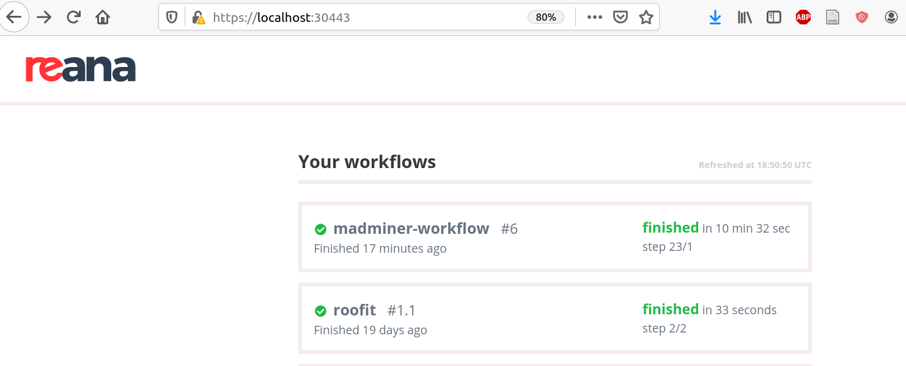

The information below describes how to install and configure the software needed to run the workflow remotely or locally. Note, that you will also need to configure an MLFlow tracking server, which is also described below.
Install the REANA client
The reana-cient is an easy-to-install python package that provides a command line interface (CLI) for submitting workflows to a REANA cluster. Normally, you would configure the workflow locally on your laptop or some interactive node on a cluster and then use the reana-client to submit the workflow to the REANA cluster. To install the reana-client simply type:
pip3 install reana-client
The official documentation and the README files of these repositories recommend creating a Python virtual environment to install these packages. However, if your interaction with the project is going to be from a user perspective, this is not mandatory.
If you are running at CERN with lxplus, you can don't even need to install the client, you can just type $ source /afs/cern.ch/user/r/reana/public/reana/bin/activate as described in the first REANA example.
Get a Token from the REANA server
You will need access to a REANA server instance. You can find your authentication token from the web interface for the REANA cluster. There is a REANA instance at CERN https://reana.cern.ch, but it requires a CERN IP address. There is also one running at BNL, which was used for the demo video. You can also contact the system administrators for your university or lab to ask if they can setup a REANA instance, or if you have credits on a public cloud computing platform it's fairly easy to deploy REANA there. For instance, we have setup a REANA instance on the NYU Greene cluster, which uses the SLURM backend to submit jobs.
Configure the client
Before submitting your workflows, you will need to set some environment variables in order for the reana-client to be able to connect with a REANA server instance.
# Optional. Only if a virtual env was created
source ~/.virtualenvs/reana/bin/activate
export REANA_ACCESS_TOKEN=“<your access token here>”
export REANA_SERVER_URL=“<the REANA instance URL here>”
export REANA_WORKON=madminer-workflow
To determine if the connection is established check the following output
reana-client ping
REANA server: <REANA_URL_SERVER>
REANA server version: 0.7.1
REANA client version: 0.7.2
Authenticated as: <username> <username@institution>
Status: ConnectedLocal monitoring of remote workflows
If we have access to a remote REANA server instance, it is more helpful to monitor the workflows and retrieve output files from the local browser than from the working directory at the cluster’s institution. Here are the steps to do it:
#local terminal, ssh to the institution hosting the REANA server
ssh -q -L <port>:<REANA_SERVER_URL>:<port> <username>@<institution>
#if the previous command brings you to a bastion, go ahead and login to your workspace
In the case of Brookhaven National Lab, the REANA server is located at
REANA_SERVER_URL=”https://kubmaster01.sdcc.bnl.gov:30443” (port=30443)
REANA_ACCESS_TOKEN contact with adminYou can now check the progress of your workflows in https://localhost:<port> on your local browser and download output files. Congratulations!

A schematic for a user and REANA cluster
Below is a schematic showing your local macine (the smiley face) with the reana-client and local web browser monitor interacting with the remote REANA cluster.

The MLFlow tracking server
MLFlow is a framework that offers developers a consistent way of (1) defining ML projects, (2) run parameterized experiments on those projects, and (3) track results, metrics and artifacts from run to run.

MLFlow has been integrated to the ML sub-workflow, in order to provide the third capability: the tracking of results and metrics on consecutive (but different) runs. Therefore, the following information applies only to the ML sub-workflow leaving the physics sub-workflow unaffected.
If you are running remotely on REANA, you will need an MLFlow tracking server up and running. If you are running locally with yadage, you will not need an MLFLow tracking server.
This could be provided to you (common case), or deployed by you in a HTTP accessible computer (including your laptop). If you are running the workflow locally with yadage (not using REANA), then you don’t need an MLflow tracking server running.
To deploy your very own MLFlow tracking server:
# Install the Python package
pip3 install mlflow
# Launch the tracking server
mlflow server \
--host "0.0.0.0" \
--port 5000 \
--workers 2 \
--backend-store-uri "file:///tmp/mlflow/runs/metadata" \
--default-artifact-root "file:///tmp/mlflow/runs/artifacts"
Connection setup
Once you have an up-and-running MLFlow tracking server, you can specify the connection URL to the workflow just before executing it. If your tracking server instance has been deployed locally, the URL needs to be: http://host.docker.internal:5000, otherwise, specify a common URL:
export MLFLOW_TRACKING_URI=”<the tracking server URL here>”
# One of the following high-level commands
make yadage-run
make reana-run
Note 1: There is an additional environment variable to set up in case the MLFlow tracking server was deployed locally, and you are using Linux. This command tells Docker to map the magic string host.docker.internal to what Docker considers the “host network”:
export PACKTIVITY_DOCKER_CMD_MOD="--add-host host.docker.internal:host-gateway"
Note 2: due to some race conditions within the MLFlow implementation, you may need to preventively create the MLFlow tracking server experiments before running the workflow. This may have been fixed by the time you are reading this, but just in case.
export MLFLOW_TRACKING_URI=”<the tracking server URL here>”
mlflow experiments create --experiment-name "madminer-ml-sample"
mlflow experiments create --experiment-name "madminer-ml-train"
mlflow experiments create --experiment-name "madminer-ml-eval"